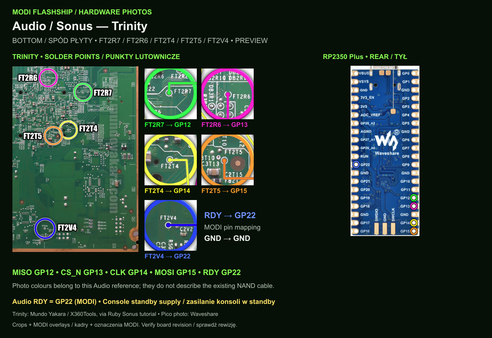
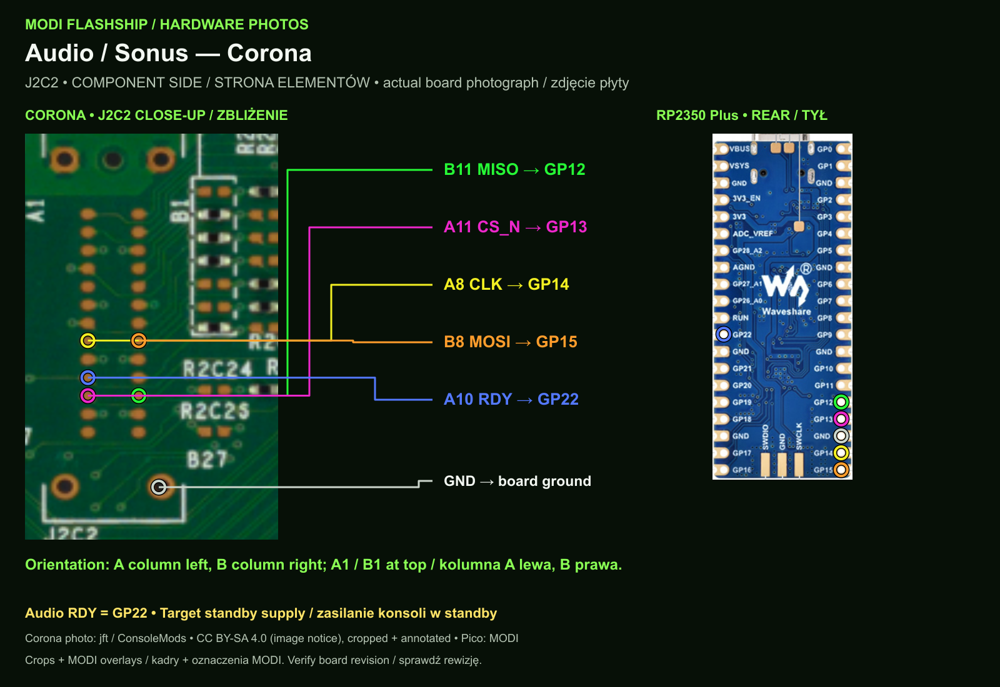
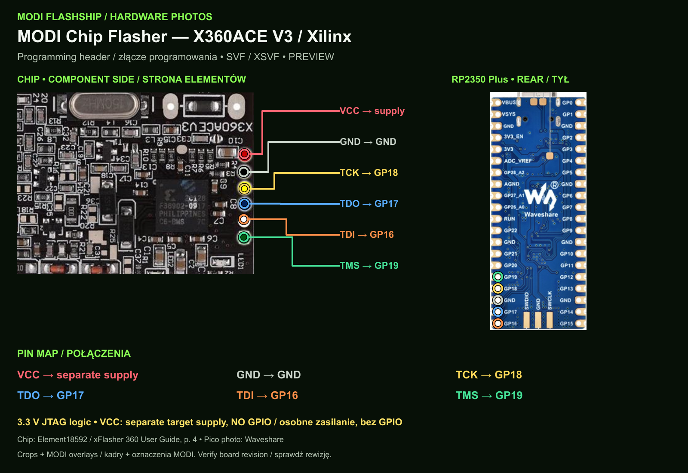
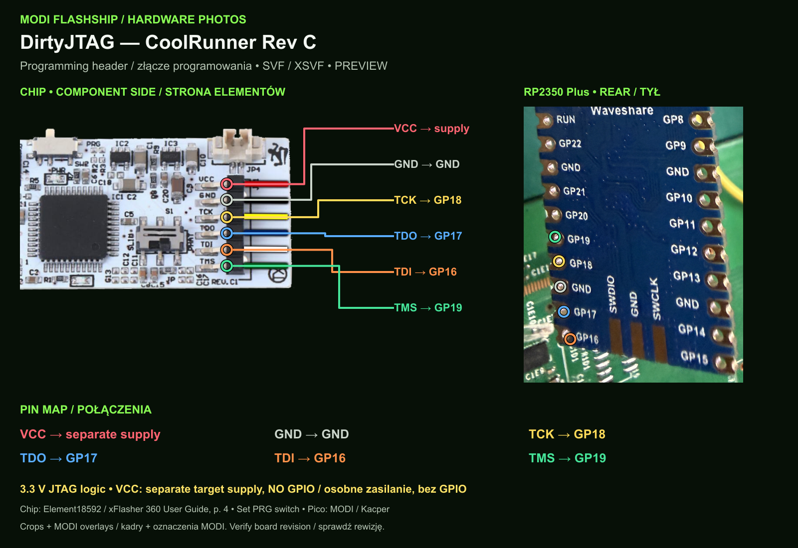
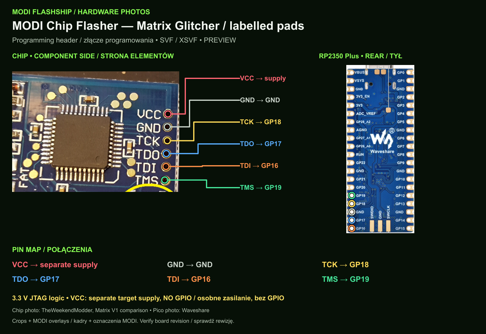
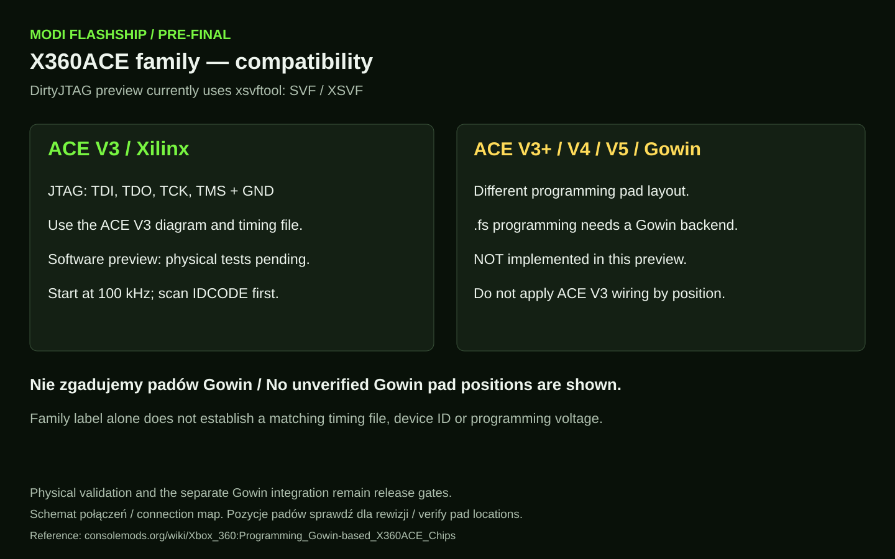
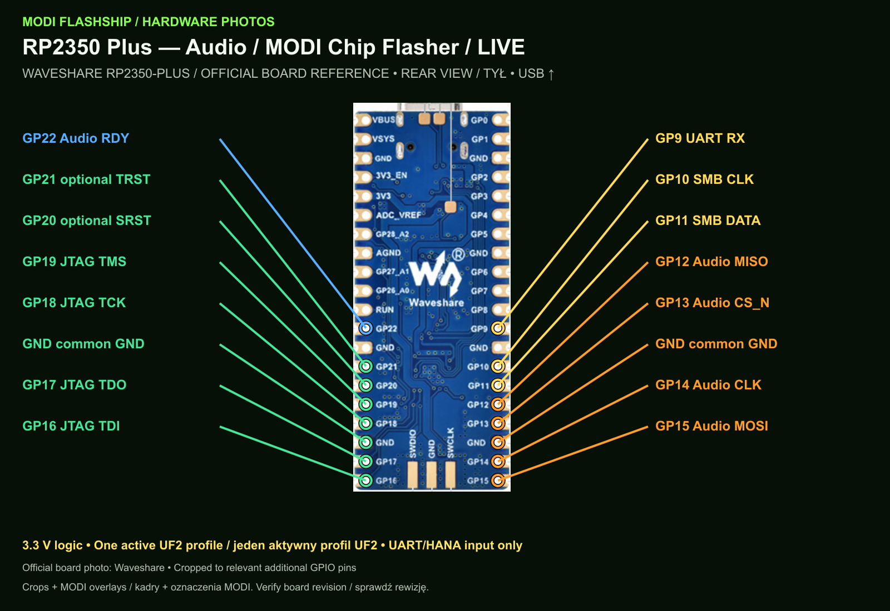
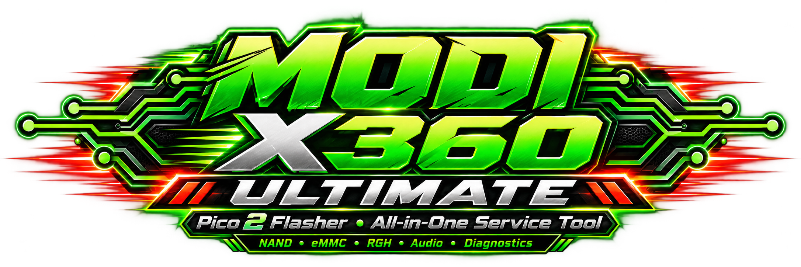

16 MB NAND
~19 s READ
~24 s WRITE
A fast, low-cost Xbox 360 NAND & eMMC service tool built around Pico 2 / RP2350. Designed for repair, backup and recovery.
Measured on tested hardware. Real times vary with motherboard, wiring, USB host and system configuration.
Tested 64 MiB + spare range.
Tested relevant 48 MiB range.
Public Beta is available as a ready one-click ZIP. No compiler or SDK required.
Download the final MODI package and matching Pico 2 UF2 from Releases.
Put Pico 2 into BOOTSEL and copy the firmware file.
Use the correct service points for the target NAND/eMMC type.
Always create and verify a backup before any write operation.
Wire colors and header order checked against our real front and rear photographs. Open a diagram for full-size pad labels.
From USB down: orange GP0 → brown GP1 → yellow GND → red GP2 → black GP3 → blue GP4 → green GP5.
Yellow is ground. Black is MOSI. Verify your motherboard revision and pad numbers. Our Corona 4 GB firmware uses the same SPI header. The Falcon diagram uses a common Fat reference photograph.
I learned from this community when I was starting as a repair technician. After years of hardware service and diagnostics, this project is my way of giving back: practical tools, documentation and knowledge that help keep hardware repairable.
Software previews; hardware validation pending. One UF2 profile at a time. Diagram colours are illustrative.







Audio RDY = GP22. ACE V3 Xilinx uses SVF/XSVF; ACE V3+ / V4 / V5 Gowin .fs is not implemented. Verify your revision and pad labels before connecting.

TURBO started as a high-speed Xbox 360 NAND/eMMC flasher. ULTIMATE expands that concept into a complete service platform: flashing, RGH assistance, CPU Key capture, Audio/Sonus, glitch-chip programming, LIVE diagnostics and automatic memory conversion.
ONE DEVICE. ONE HEADER. ONE SOFTWARE.
FULL XBOX 360 SERVICE WORKFLOW.
Tested NAND/eMMC ranges. Binary bytes and timings unchanged.
Digital ISD2100. MODI RDY = GP22.
SVF/XSVF for ACE V3, CoolRunner and Matrix. Gowin .fs is not supported yet.
Live receive, logs and spoken notifications.
Current LAN panel; target UART/LIVE key capture is in development.
Passive SMBus capture. Full HDMI diagnostics need separate validation.
Planned single workflow with two backups and final readback.
Planned images for physical memory replacement with 16 MB NAND.
Future research module; no remarry function in current firmware.
Target architecture: the application switches one device between successive service modes. Today the preview needs separate UF2 profiles and additional GPIO wiring.
Target: no TV, no manual IP, no LAN required for CPU Key capture over supported UART/LIVE. This automation is in development; the current XeLL LAN panel is an alternative preview.
Images for physical chip replacement. No working one-click conversion yet. Winchester requires CPU Key / console data from a supported method, e.g. Bad Update with a suitable acquisition tool; it is not a classic RGH target.
HANA / SMBus LIVE Monitor: passive traffic capture, not a validated HDMI test. MODI Audio RDY = GP22; GP11 is reserved for SMB_DATA.